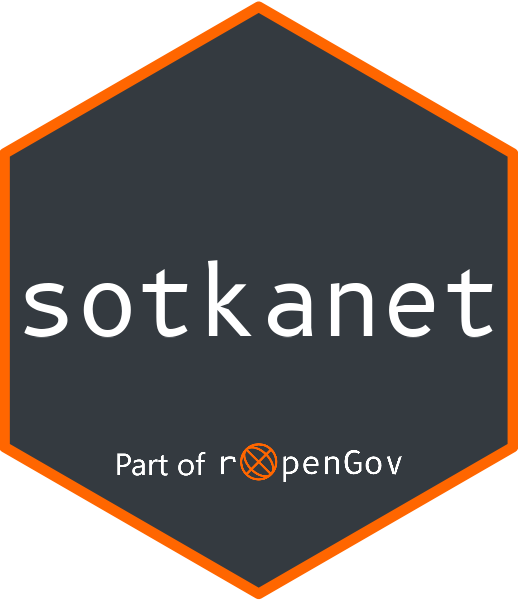

Read cache for sotkanet data.frame
Source:R/sotkanet_read_cache.R
sotkanet_read_cache.RdHelper function that reads the cache for saved sotkanet data.frame.

R/sotkanet_read_cache.R
sotkanet_read_cache.RdHelper function that reads the cache for saved sotkanet data.frame.